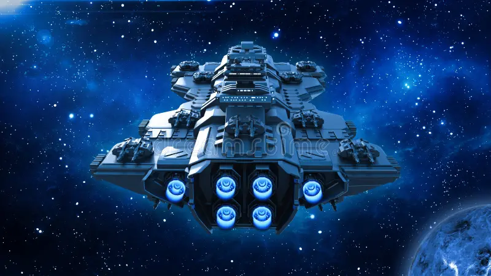

SITA despegó lentamente del lago pantanoso dejando atrás ese planeta lúgubre que casi los destruye. Desde la ventana Tony lo vio encogerse hasta desaparecer entre las estrellas. No sintió alivio inmediato sino algo más tranquilo y profundo, como cuando termina una tormenta larga y el aire huele diferente.
Se sentó en su silla de piloto con KAWA acurrucada en su regazo y dejó que SITA trazara el rumbo. Sin destino específico, sin misión urgente. Solo el espacio infinito adelante. Pensó en Elvira. La imaginó en su planeta tomando café por las mañanas con ese gesto de entrecerrar los ojos al primer sorbo. La imaginó feliz, viviendo su vida, quizás ya sin odio. Y en lugar de dolerle esa imagen, le dio paz.
Se imaginó un futuro que nunca existiría. Los dos viajando en SITA, KAWA entre ellos, recorriendo sistemas que nadie había explorado. Elvira nombrando cada estrella nueva con nombres ridículos que luego defendía con argumentos imposibles. Ese futuro no sería. Pero existió en su mente con suficiente claridad como para agradecerlo. La amó. La amaría siempre. Pero ya era hora de irse. — SITA. — Dime, Tony. — Gracias por no rendirte en el lago. — Alguien tenía que ser el adulto en esta nave. Tony sonrió. Hacía mucho que no lo hacía de verdad. Sayonara, Elvira.
